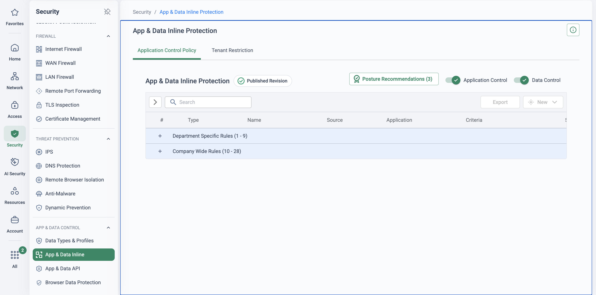

Why policy translation decides the migration
This mapping is authored from Cloudflare and Cato documentation plus the Cato PS migration methodology — not from a completed, referenceable Cloudflare policy migration. Review it with Cato Professional Services before using it with a customer, especially the category-taxonomy mapping, the CASB model translation and the DLP detection-parity plan.
Sites and clients cut over in an afternoon; a mistranslated rulebase generates helpdesk tickets for a quarter. The Cato PS approach treats policy as its own workstream with a four-phase pipeline: EXPORT the vendor estate with hit counts → REVIEW & MAP the survivors to CMA constructs → DEPLOY monitor-first, with no user impact → OPTIMISE, flipping monitor to enforce on event evidence. The one rule that never bends: never lift-and-shift. Every mature rulebase carries dead weight — zero-hit rules, shadowed rules, exceptions for systems that no longer exist — and Cloudflare estates accrete policy app-by-app and team-by-team, so rationalise on hit counts before a single rule is rebuilt.
Cloudflare adds three twists of its own. First, structure: Gateway policy is split across three types — DNS, network and HTTP — evaluated as separate rule sets, with Magic Firewall filtering site traffic in a fourth, packet-level engine. Second, tier fragmentation: DLP and Browser Isolation are paid add-ons and dedicated egress IPs are an Enterprise add-on, so what the policy export contains depends on the invoice — confirm what was actually licensed and used before scoping parity. Third, export: config-as-code estates already hold the inventory in a Terraform repo; for everyone else, Cloudflare's own cf-terraforming tool exports the live configuration to HCL — a machine-readable, point-in-time snapshot that doubles as the migration workbook.
WAF custom rules, CDN page/cache rules, redirect rules, authoritative DNS records and Workers logic are out of scope and stay on Cloudflare. They are application-delivery policy, not SASE policy, and Cato does not replace them. Put them in the stays-on-Cloudflare register from the companion Cloudflare to Cato page and agree it with the customer early — only Zero Trust policy (Gateway, Magic Firewall, CASB, DLP) translates.
"Of your Gateway rules, how many fired in the last 90 days — and can you show me the analytics? Which of DLP, Browser Isolation and dedicated egress IPs are actually on your contract?" The answers size the real migration: it is almost always smaller than the exported rulebase suggests, and sometimes smaller than the customer believes they bought.
This page covers the four security-policy domains. Access (ZTNA) application policy, agents, tunnels and Magic WAN re-termination are on the companion Cloudflare to Cato architecture page.
Gateway network policies & Magic Firewall → Cato firewalls
Cloudflare runs two firewall engines with different scopes. Gateway network policies are identity-aware L4 rules (destination IP, port, SNI, with user, group and device-posture selectors) applied to traffic proxied through WARP or a Magic WAN path. Magic Firewall is different in kind: a network-level packet filter for Magic WAN / Magic Transit traffic at the Cloudflare edge, matching on packet fields — source/destination IP, port, protocol — with no user identity at all. Export both: cf-terraforming renders Gateway policies and Magic Firewall rules to HCL; pull hit counts from the Cloudflare analytics before rationalising.
| Cloudflare construct | Cato construct | Translation note |
|---|---|---|
| Gateway network policy — internet-bound L4 (IP / port / SNI, identity + posture selectors) | Internet Firewall rule — service/port/app objects scoped to users and groups | Keep the identity scoping; posture selectors become Cato Device Posture profiles referenced in the rule |
| Gateway network policy — private-network ranges reached over WARP | WAN Firewall rule against application / network-segment objects | The WAN Firewall is an allowlist — every private flow needs an explicit allow or it stops at cutover. Enumerate these rules first |
| Magic Firewall rule — packet-level filter on site traffic | WAN Firewall or Internet Firewall rule scoped to sites / subnets | No identity exists in the source rule — rebuild as site/subnet-scoped rules, then tighten to identity where the flow is genuinely user-driven |
| Posture-gated network access (WARP device checks in the rule) | Device Posture profile + firewall rule reference | Posture criteria (EPP/EDR, encryption, OS version) are defined once as profiles and reused across rules |
Semantic gotchas. Two engines collapse into two Cato rulebases with opposite default postures: the WAN Firewall ends in an implicit block-all, the Internet Firewall in an implicit allow — so a Magic Firewall "allow" that was really relying on a permissive default must become an explicit WAN Firewall rule, while most Gateway "allow" network rules to the internet become unnecessary. Gateway evaluates DNS → network → HTTP as a sequence; that cross-type ordering dissolves into separate, independently ordered Cato policies — verify no rule depended on being "rescued" by a later policy type. And any rule scoped to an IdP group needs that group provisioned in Cato (SCIM) before the rule can land.
Migration strategy. Export to HCL, attach hit counts, discard zero-hit and shadowed rules, then rebuild in two passes: WAN Firewall allows for every surviving private flow before the first site cuts over; Internet Firewall rules for the surviving L4 blocks. Watch the events stream for unexpected WAN blocks during the pilot — that is the allowlist telling you a flow was missed, cheaply.
Gateway HTTP & DNS policies → Internet Firewall + DNS Security
The SWG estate lives in Gateway HTTP policies (content categories, per-application controls, Allow / Block / Isolate actions, Do-Not-Inspect lists) and Gateway DNS policies anchored to DNS locations — office networks pointing at Cloudflare resolver IPs or DoH endpoints. On Cato the same intent lands in the Internet Firewall / SWG (the same category / app / action model — Allow, Block, Prompt — plus RBI "Isolate") and DNS Security, inspected in-line at the PoP for any traffic already steered via Client or Socket, with no separate DNS-location construct to maintain.
| Cloudflare construct | Cato construct | Translation note |
|---|---|---|
| HTTP policy — content-category Block | Internet Firewall category rule (Block / Prompt) | Category taxonomies differ — map by intent, never by name, and spot-check the top categories by traffic volume |
| HTTP policy — per-application control | Internet Firewall app / app-category objects from the App Catalog | Granular in-app actions belong to CASB App Control (domain 3) — split the intent accordingly |
| HTTP "Isolate" action (Browser Isolation add-on) | RBI "Isolate" policy action | Isolation is a policy action beside Block/Prompt, not a per-user add-on SKU — replicate the intent on risky / uncategorised sites |
| Do-Not-Inspect lists + Cloudflare root certificate | TLS Inspection exceptions + Cato CA certificate to devices | Rebuild the exception list before enabling inspection — pinned apps break identically on both platforms |
| Gateway DNS policies | Cato DNS Security + Internet Firewall categories | In-line at the PoP; DNS sinkholing helps identify infected hosts during co-existence |
| DNS locations (office egress to Cloudflare resolvers) | Retired per site — no equivalent needed | Re-point office DNS only after that site's traffic is on Cato — see handover order below |
Semantic gotchas. Two fidelity traps. Taxonomy drift: a Cloudflare category and a similarly named Cato category do not contain the same sites — take the customer's top blocked and top allowed categories from Gateway analytics and validate the mapped behaviour against real destinations. Inspection dependency: any HTTP rule that matched on content inside TLS only works once Cato TLS inspection covers that category — until the relevant TLS-inspection wave lands, the rule silently degrades to SNI/domain-level matching. Sequence the waves before promising parity.
Migration strategy. Start from Cato's recommended SWG baseline, layer the customer's surviving Gateway intent on top, and phase TLS inspection by URL category. DNS handover order is per site: roaming users carry DNS protection with the Client swap automatically; office DNS locations are re-pointed only after the site's traffic path has moved to Cato — never leave a site's DNS on Cloudflare once its traffic has moved, or policy and logging split across two vendors.
API posture findings → inline App Control + API SaaS security
Be honest here: this is a model translation, not a rule translation. Cloudflare's CASB is API-driven posture scanning — integrations into SaaS tenants (Microsoft 365, Google Workspace and similar) that produce findings: misconfigurations, publicly shared files, risky third-party app grants. It is not an inline enforcement point; inline app behaviour lives in Gateway HTTP policies and Shadow IT discovery in Gateway analytics. Cato's CASB is inline-first — App Catalog risk scores and granular Application Control in the traffic path — complemented by API-based SaaS security and Tenant Restrictions. You migrate the intent (which apps are sanctioned, what posture the tenant must hold), not the findings.
| Cloudflare construct | Cato construct | Translation note |
|---|---|---|
| CASB API integrations + posture findings | Cato API-based SaaS security, where documented for the app | Findings do not migrate — integrations are re-created on Cato and the tenant re-scanned; export the open-findings backlog first so remediation state isn't lost |
| Shadow IT discovery (Gateway analytics) | App Catalog risk scores + Cloud Apps dashboards | Cato builds the sanctioned/unsanctioned picture from inline traffic — richer once TLS inspection covers the app categories |
| Sanctioned / unsanctioned app decisions (HTTP policies) | Application Control policy — inline, per-app granular actions | Enforcement moves into the traffic path: block uploads to unsanctioned apps rather than reporting them after the fact |
| Tenant-control headers injected by Gateway HTTP policies | Cato Tenant Restrictions | Corporate-tenant-only access to M365/Google enforced at the PoP — verify per-app coverage during the pilot |

Semantic gotchas. Some Cloudflare posture checks may have no documented Cato equivalent — keep an honest gap register and review it with Cato PS rather than glossing it; the customer's security team will find the gap if you don't. Inline visibility and control depend on TLS inspection of the relevant app categories — the CASB wave belongs after the corresponding TLS-inspection wave. And the sanctioned-app register is a business decision, not an export artefact: confirm it with the customer, don't infer it from old findings.
Migration strategy. Record the sanctioned-app register and the open findings backlog in discovery. Re-create the API integrations on Cato where documented, run inline CASB in monitor to rebuild the shadow-IT picture from live traffic, then enforce granular App Control and Tenant Restrictions once the dashboards confirm the app population matches expectations.
Gateway DLP profiles → Cato DLP profiles & Data Control
Cloudflare DLP is tier-dependent: DLP is a paid capability and custom DLP sits in Enterprise contracts, so start by confirming what was licensed and what actually fired. Structurally, DLP profiles (predefined entries for financial data, PII and credentials; custom regex entries; Exact Data Match datasets on higher tiers) are detection definitions used as selectors inside Gateway HTTP policies, which carry the action. On Cato, DLP profiles plug into the Data Control policy — the rule binds profile, application scope, direction and action in one place — with EDM, OCR and Microsoft sensitivity (MIP) labels available as detection inputs.
| Cloudflare construct | Cato construct | Translation note |
|---|---|---|
| DLP profile — predefined entries (financial, PII, credentials) | Cato DLP profile — predefined data types | Detection libraries differ — validate parity on a test corpus of the customer's real document types before enforcing |
| DLP profile — custom regex entries (Enterprise) | Cato custom data types | Port the expressions and match thresholds; regex dialect differences surface in testing, not review |
| Exact Data Match datasets | Cato EDM | Re-index the source data on the Cato side — the dataset itself is not portable |
| Gateway HTTP policy carrying the DLP action (block upload / download) | Data Control rule — profile + app scope + direction + action | The profile/policy split collapses into one rule object; map each HTTP-policy-plus-profile pair to one Data Control rule |
| — (no equivalent exported) | OCR and MIP sensitivity labels as detection inputs | Cato-side additions worth designing in rather than porting around — especially where the customer already labels with Purview/MIP |
Semantic gotchas. DLP is the domain most likely to be smaller than believed: if the add-on was never licensed or the profiles never matched, the export shows configuration without behaviour — check hit counts before rebuilding anything. Detection fidelity requires TLS inspection of the target applications; a DLP rule on an uninspected category inspects nothing. And blocking on day one trains users to route around the control — monitor first, always.
Migration strategy. Rebuild only the profiles with real matches, run every Data Control rule in monitor, and review matches on the Data Protection dashboard with the data owner — tune thresholds and scope, then flip to block per rule once false-positive rates are agreed. Keep the test corpus; it becomes the regression suite for every later profile change.
Before → after: four Gateway policies translated
Both tables below are composed to show the translation pattern, not exported from a real tenant or captured from either console. Names, groups, categories and CIDRs are generic; expressions follow Gateway's selector style without claiming to be syntactically exact. Use the shape, not the values — and see the screenshot below the after-table for the real CMA console, captured from a live demo tenant.
Four representative Gateway policies — one DNS, two HTTP, one network — and where each lands on Cato. In the after table, IFW marks Internet Firewall rules (with the DNS-layer intent carried in-line by DNS Security) and WAN FW marks the WAN Firewall rule built against an app segment under SDP.
Before — Cloudflare Gateway (illustrative)
| # | Policy | Type | Selector / expression | Action |
|---|---|---|---|---|
| 1 | Block gambling & adult content | DNS | any(dns.content_category[*] in {"Gambling" "Adult Themes"}) | Block |
| 2 | Social media — everyone except Marketing | HTTP | any(http.request.uri.content_category[*] in {"Social Networking"}) and not(any(identity.groups.name[*] in {"Marketing"})) | Block (with block page) |
| 3 | Isolate uncategorised destinations | HTTP | any(http.request.uri.content_category[*] in {"New Domains" "No Content"}) | Isolate |
| 4 | Engineering access to internal tools (over WARP) | Network | net.dst.ip in {10.20.0.0/16} and net.dst.port == 443 and any(identity.groups.name[*] in {"Engineering"}) | Allow |
After — Cato CMA (illustrative)
| # | Name | Source | App/Category | Service | Action | Track |
|---|---|---|---|---|---|---|
| 1 | IFW · Block gambling & adult | Any | Categories — Gambling, Adult Content | Any | Block | Event |
| 2a | IFW · Allow social media — Marketing | Group — Marketing | Category — Social Media | Any | Allow | Event |
| 2b | IFW · Block social media — everyone else | Any | Category — Social Media | Any | Block | Event |
| 3 | IFW · Isolate uncategorised & new domains | Any | Categories — Uncategorised, New Domains | Any | RBI (Isolate) | Event |
| 4 | WAN FW · Engineering → Internal Tools | Group — Engineering (SDP users) | App segment — Internal Tools (10.20.8.0/22) | HTTPS (TCP/443) | Allow | Event |

What changed in translation
- Expression-based selectors → rule criteria model. Gateway's free-form
expressions become structured rule fields — source, app/category, service, action, track.
Negations translate as ordering: the
not(…Marketing…)clause in policy 2 becomes an allow-above-block pair (2a/2b), because Cato rules are evaluated top-down rather than composed with boolean operators. - DNS / HTTP / network policy split → converged rulebase ordering. Gateway evaluated three policy types as a sequence; the same intents now sit as independently ordered rules in the Internet Firewall (DNS Security in-line, no DNS-location construct) and the WAN Firewall — re-verify ordering per rulebase, as flagged in the FW-rules domain above.
- Isolate → RBI. The Browser Isolation add-on's "Isolate" action becomes the RBI policy action beside Allow, Block and Prompt in the same rulebase — one rule (3), no separate SKU or policy type.
- WARP CIDR access → app segments. The network policy's whole
10.20.0.0/16collapses to a named app segment holding only the application subnets, allowed to the Engineering group under SDP — least privilege by application, and the natural point to tighten a broad range down to what the flows actually use.
The rules that hold across all four domains
Translate the default posture, not just the rules
Cato's WAN Firewall is an allowlist (implicit block-all); the Internet Firewall is a blocklist (implicit allow). Every vendor rule that leaned on a permissive default must become explicit east-west; most explicit internet allows become redundant.
Staged TLS inspection is the fidelity prerequisite
SWG content rules, inline CASB visibility and DLP detection all degrade without inspection. Phase TLS inspection by URL category first, rebuild Do-Not-Inspect lists as exceptions, and schedule each domain's enforcement wave behind its inspection wave.
Monitor, then block
Every migrated rule lands in monitor first — zero user impact, full event telemetry. Flip to enforce per rule when the events prove the rule matches what it should and nothing it shouldn't.
Identity and SCIM groups come first
Gateway and Access policy is scoped to IdP groups. Provision the same groups into Cato via SCIM before any identity-scoped rule is built — a rule can't reference a group that doesn't exist yet, and hand-built groups drift.
Validate with events and hit counts
The exit criterion for every wave is evidence: Cato rule hit counts tracking the vendor-side baseline, and an events stream free of unexplained blocks. If a rule never fires on either platform, it should not have been migrated.
Never lift-and-shift
Rationalise on hit counts before rebuilding: zero-hit rules, shadowed rules and dead exceptions are discarded at review, not ported. A migration is the one chance to shrink the rulebase with confidence — take it.
Four domains, one pipeline
The same pipeline runs for every domain: export with hit counts, discard the dead weight, map the survivors to CMA constructs, deploy in monitor, and let the event telemetry earn the flip to enforce. REVIEW & MAP is deliberately two boxes — rationalisation is a distinct step with its own output, the discard list — and OPTIMISE is the monitor-to-enforce flip, driven by evidence rather than a date.
Where this sits in the Cato SASE platform
- Gateway, Magic Firewall and DLP rules export to HCL with hit counts; dead rules go; CASB feeds discovery.
- Survivors map to WAN/Internet Firewall, RBI Isolate, Tenant Restrictions, Data Control and TLS exceptions.
- The PoP applies the converted rules to every site and user, monitor-first with no user impact.
- Events and hit counts prove each rule before it is promoted from monitor to block.
Running the policy workshop
This session works best as a working workshop, not a show-and-tell. Ask the customer to bring their Gateway policy export (Terraform repo or a cf-terraforming run) and 90 days of policy analytics — the conversation changes when the real rulebase is in the room.
-
Frame the pipeline
Walk the diagram above: export with hit counts, rationalise, map, monitor, enforce. Make the anti-pattern explicit — nobody lifts-and-shifts a rulebase into Cato, and the discard list is a deliverable, not a by-product.
-
Show the two firewall postures
Security → WAN Firewall Security → Internet Firewall
Contrast the WAN Firewall allowlist with the Internet Firewall blocklist, and show how a rule combines users, groups, sites, app objects and device posture in one grammar — where Gateway network policies and Magic Firewall rules both land.
-
Walk the SWG rulebase
Security → Internet Firewall
Open a category rule and step through the action set — Allow, Block, Prompt and RBI Isolate as a policy action rather than an add-on SKU. Map two or three of the customer's own Gateway categories live to show taxonomy mapping by intent.
-
Show staged TLS inspection
Security → TLS Inspection
Demonstrate the account-level policy and category-based staging, and rebuild one of their Do-Not-Inspect entries as an exception. Land the dependency: SWG content rules, CASB visibility and DLP detection all ride on this.
-
Translate the CASB model
Security → CASB Monitor → Cloud Apps Dashboard
Show the App Catalog risk scores and a granular App Control rule, then the Cloud Apps dashboard building the shadow-IT picture from live traffic. Name the model change honestly: their API posture findings become inline enforcement plus API scanning — intent migrates, findings are regenerated.
-
Build a DLP rule in monitor
Security → DLP Configuration Monitor → Data Protection Dashboard
Create a Data Control rule from a predefined profile in monitor mode, then show where matches surface for review with the data owner. Explain the flip-to-block criterion: agreed false-positive rate, not a calendar date.
-
Close on validation
Monitor → Events
Filter events to a migrated rule and show hit counts accumulating — the evidence that moves each rule from monitor to enforce, and the audit trail that proves parity wave by wave.